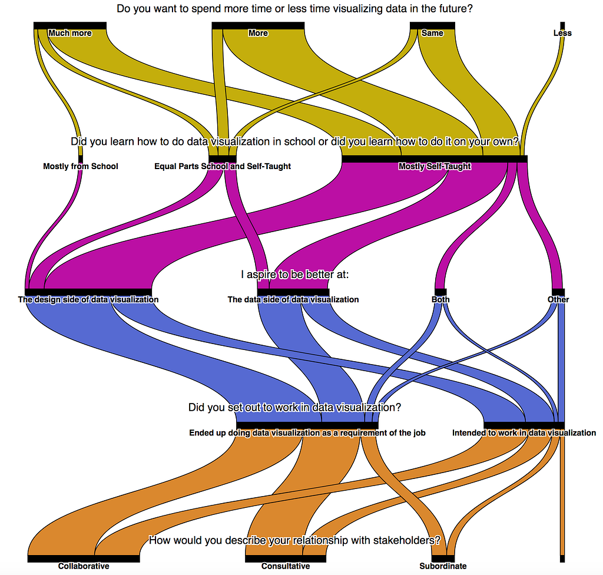
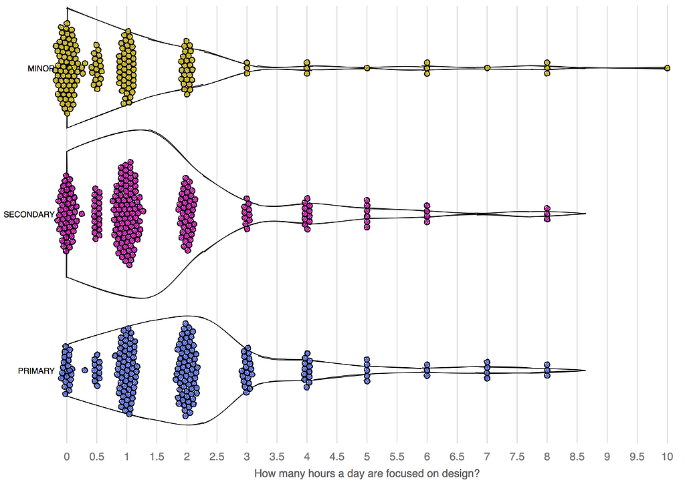

In May, I put out a call to fill out a survey directed at people who do professional data visualization. It received 628 responses (down from 1000 last year) and the processed and cleaned results have been uploaded onto a GitHub repo alongside the 2017 results. As with last year’s survey it’s important to remember this is not a scientific survey and is likely biased toward my social network, but it was shared widely among the BI and data science communities, as well as among freelancers and other data visualization practitioners. That’s reflected in a broad set of results from journalism, science, tech, academia and other fields and approaches.
The survey touched on issues that are prominent in professional data visualization:
- The tools we use
- The structure of our organizations
- Our stakeholders
- Our demographics
- Our methods
It’s a rich and intriguing dataset which I have mostly come to know because I had to clean it up (it turns out there are so many interesting ways to spell Lisa Charlotte Rost). As with last year’s results I didn’t want to take advantage of my early access to do any deep or substantive analysis (an example of that kind of analysis can be seen in Shirley Wu’s analysis of the frustrations listed in the 2017 survey). Instead, I looked at one of the themes that seemed to pop up in the responses: the importance of design in data visualization. I commonly see data visualization presented as an engineering problem, with technical solutions and new tools offered up continuously, but in practice the thing that differentiates impactful data visualization from its peers is the how well it was designed.

Here, a Sankey diagram shows the interrelationship between responses to a few of the survey questions. We can see that few people learned data visualization in formal education and that the vast majority were self-taught but, regardless of which way they learned data visualization, the majority of respondents indicated they needed to invest in improving their data visualization design skills.
Data visualization design typically gets one slot at each conference, and rarely delves deep into design practices specific to data visualization. Instead we spend most of our time examining a particular technique or a new tool or the results of a new study. I know of no focused programs on data visualization design and we’re still at the point where most explanations of good design are references to beautiful work with little more than “do it like that” as the advice. Examples are great, but there’s obviously a desire for more formal design tips like the workflows and practical steps seen in the Datawrapper blog.

The results of another question on the topic: How many hours a day are focused on design? Here split into whether the respondent described their data visualization duties as primary, secondary or minor. Harder to tell in just plotting the respondents but more clear when drawing a distribution is the increased investment in design based on how much data visualization is a part of the job.
What the survey does not explain and what I would love to hear about is what is meant by “design” to people in data visualization. Not just whether it falls into one of the big schools, like graphic design, experience design or information design but what are the practical steps one takes in designing data visualization. How does one spend their one or two hours?
Along with hearing your experience of design, I also invite you to take a look at the survey results, produce your own data visualizations of them and share them to spur more conversations in the community.